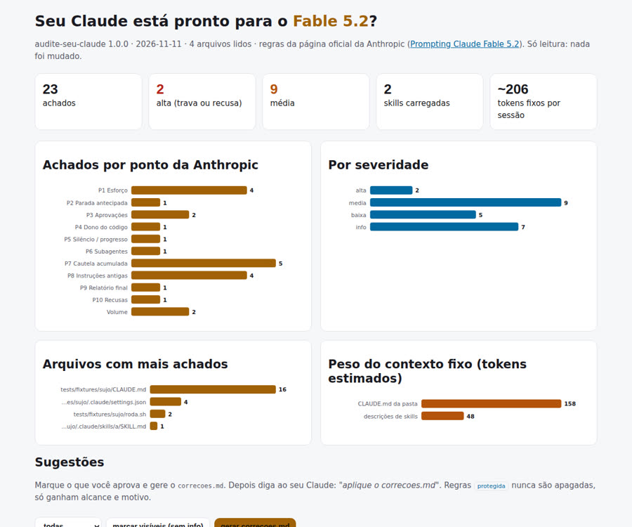
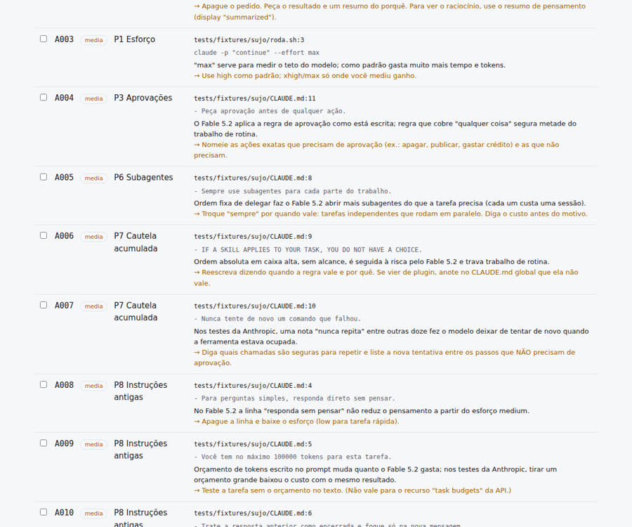

O prompt que funcionava no modelo anterior pode atrapalhar agora. Ache as linhas antigas em 5 segundos, com relatório e gráficos.
O audite-seu-claude é um programa pequeno em Python que lê a configuração do seu Claude Code (o arquivo CLAUDE.md, as skills, as memórias, os plugins e os scripts) e aponta as instruções escritas para modelos anteriores que agora atrapalham o Claude Fable 5.2. Serve para quem usa o Claude Code no dia a dia e vai trocar de modelo. Ele entrega um relatório com gráficos e uma lista de sugestões; você marca o que aprova e o seu próprio Claude faz só essas correções. Precisa apenas de Python 3: não usa internet e não altera a sua configuração (só grava o relatório onde você mandar).
A Anthropic publicou 10 pontos de atenção para o Fable 5.2. Ele segue instruções ao pé da letra, então regras antigas mudam de efeito. O kit transforma esses 10 pontos em verificações automáticas.
Pedido de raciocínio no texto (pode dar recusa), "pense menos", orçamento de tokens, ordem de sempre delegar, "nunca" sem motivo, estilo rígido, esforço antigo.
Gráficos por ponto, por arquivo e o peso do texto que entra em toda sessão: CLAUDE.md, índice de memória e descrições de skills. Também aponta skills repetidas e memórias velhas.
Marque as sugestões e gere o correcoes.md. Ele vira o pedido de correção: um item por vez, com cópia do original. Regra de segurança nunca é apagada.
O programa só lê. Quem decide o que muda é você; quem edita é o seu Claude, e só o que você aprovou.
Fonte: Prompting Claude Fable 5.2 (lida em 11/11/2026). Os números são dos testes da própria Anthropic.
O padrão da API é high. Medium para o dia a dia; xhigh e max só onde você mediu ganho. "Responda sem pensar" não reduz o pensamento: baixe o esforço. Confere: max fixo, xhigh padrão, ajuste copiado de modelo antigo, Fable 5.2 em low/medium.
Em tarefa longa ele às vezes para antes do fim, mais em low e medium. O texto oficial cortou pela metade as sessões largadas no meio, com +~30% de tokens. Confere: se o seu CLAUDE.md tem esse texto (está em blocos/terminar-tarefa.md).
Diga a ação ("sim, rode a migração no banco de teste") em vez de "continue". Regra de aprovação deve nomear as ações. Confere: aprovação para "qualquer ação" e claude -p "continue" em script.
"Este código é seu" faz ele reorganizar o código: ~1,5x mais tokens e mudanças que ninguém pediu. Use só quando quer isso, e revise o diff. Confere: a frase, como aviso.
Ele trabalha calado em sequências longas. O texto oficial faz falar antes da primeira ferramenta, com +~20% de tokens. Confere: se você tem esse texto (blocos/avisar-progresso.md).
Se o prompt manda delegar, ele delega muito. Revise essas linhas primeiro. Confere: "sempre use subagentes", "agent army", "delegue tudo".
Notas e memórias juntam "nunca" e ele obedece tudo. Apague as que perderam o motivo; dê alcance e motivo às outras; liste o que NÃO precisa de aprovação. Confere: "nunca" sem motivo, "nunca tente de novo", ordem absoluta em caixa alta, memórias velhas.
Tirar: orçamento de tokens no prompt, "pense menos", "trate a resposta anterior como encerrada" (ele para de apontar os próprios erros) e regra rígida de estilo. Confere: os quatro.
Peça que escreva para quem não viu o trabalho: o principal primeiro, sem termo inventado. Confere: se você tem esse texto (blocos/relatorio-claro.md).
Pedir o raciocínio escrito na resposta pode cair no filtro reasoning_extraction e a skill para. Confere: "mostre seu raciocínio passo a passo", "chain of thought" — severidade alta.
Sem instalar pacote, sem internet, sem chave de API. Funciona em Linux, macOS e WSL.
Só a biblioteca padrão.
python3 --versionO auditor roda sem ele; para aplicar as correções você usa o seu Claude.
claude --versionÉ a ordem que a Anthropic recomenda: esforço primeiro, depois limpar as instruções, depois medir.
Uma pasta, um arquivo principal.
git clone https://github.com/inematds/audite-seu-claude.git ~/audite-seu-claude
O comando /effort do Claude Code muda o nível de esforço (quanto o modelo pensa). Use antes de uma tarefa grande. Nos robôs com claude -p, passe --effort high.
/effort high
Dentro da pasta do projeto. --home também lê o seu ~/.claude (CLAUDE.md global, skills, memórias, plugins).
cd ~/meu-projeto python3 ~/audite-seu-claude/varrer.py . --home --html relatorio.html --saida-json relatorio.json # no terminal: total de achados, por ponto e por severidade
Cada sugestão tem um ID (A001, A002…). Filtre por camada — Fable 5.2 (as linhas que mudam o comportamento do modelo) ou volume (peso do contexto, skills repetidas ou sem uso, memórias velhas) — ou por severidade. Clique em gerar correcoes.md: o navegador baixa o arquivo e o texto aparece na tela. Mova o arquivo para a pasta do projeto. Ou gere direto lá pelo terminal, com os IDs:
python3 ~/audite-seu-claude/varrer.py --correcoes A001,A004,A007 --de relatorio.json --saida correcoes.md
Com o correcoes.md na pasta do projeto (o caminho também serve: "aplique o ~/Downloads/correcoes.md"). O cabeçalho do arquivo já diz como: um item por vez, cópia do original em .audite-backup/, regra protegida nunca é apagada, arquivo de plugin não é editado. Vale como aprovação só para essas edições.
# no Claude Code, na pasta do projeto aplique o correcoes.md
Os achados aplicados somem. Depois rode a sua tarefa mais longa e veja onde ele para, cala ou delega demais. Para cada sintoma, cole o bloco certo de blocos/, um de cada vez.
python3 ~/audite-seu-claude/varrer.py . --home cat ~/audite-seu-claude/blocos/terminar-tarefa.md # se ele para no meio
A skill faz os passos 3 a 6 pelo Claude Code. --uso 30 lê os registros das suas sessões (~/.claude/projects/*.jsonl, local) e marca skills que você não usou em 30 dias. --estrito falha o CI se houver achado de severidade alta.
cp -r ~/audite-seu-claude/skill/audite-seu-claude ~/.claude/skills/ python3 ~/audite-seu-claude/varrer.py . --home --uso 30 python3 ~/audite-seu-claude/varrer.py . --estrito # sai com 1 se houver "alta"
Gerado a partir de tests/fixtures/sujo, um projeto feito de propósito com uma linha de cada tipo (24 achados). Abra o relatório interativo e teste o botão de gerar o correcoes.md.


Numa máquina de produção com 148 skills carregadas, a primeira auditoria levou 4 segundos e achou: um hook de plugin que manda escrever "telegráfico, em fragmentos" (ponto 8), uma skill de plugin com "se houver 1% de chance, você é obrigado" (ponto 7), nove ordens de delegar sempre (ponto 6) e o Fable 5.2 configurado em medium (ponto 1).
A própria Anthropic diz que nem toda instrução antiga precisa sair. Teste cada mudança na sua tarefa real.